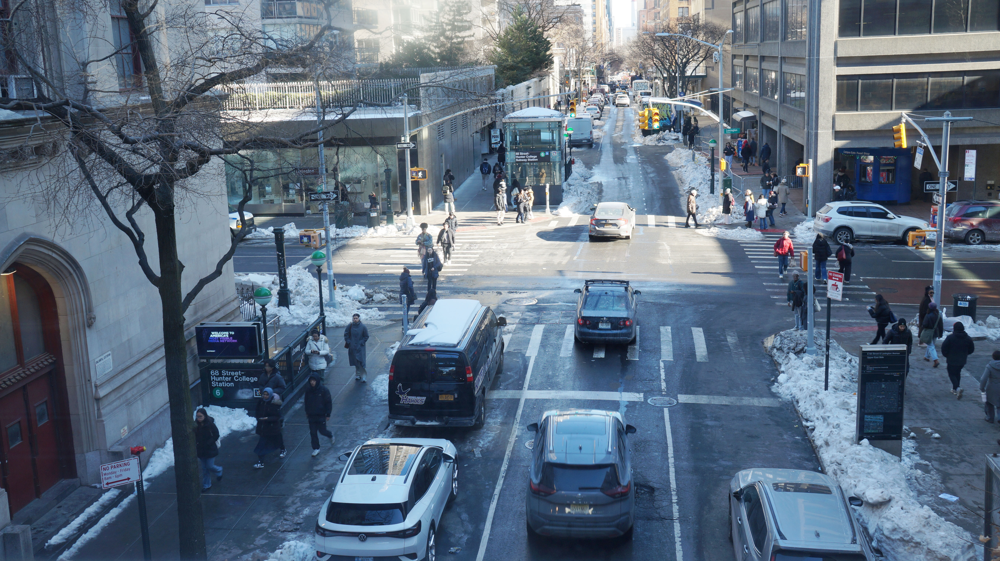
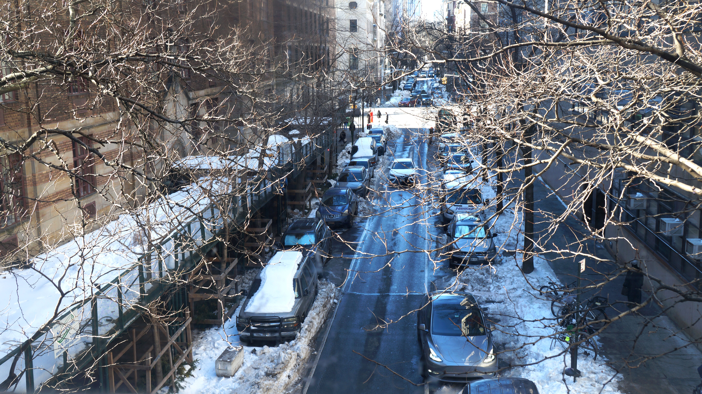

Both images focus on the outside of Hunter to capture the intersection of urban grit and winter stillness, highlighting how the city's infrastructure handles the aftermath of the snowstorm. The composition uses a high-angle perspective and framing from bare tree branches to create depth, guiding the viewer’s eye down the snowy corridors of the Upper East Side. By emphasizing the cool tones and the sharp contrast between the white snow and dark asphalt, the edit establishes a somber, realistic mood that reflects the quiet resilience of a New York winter.